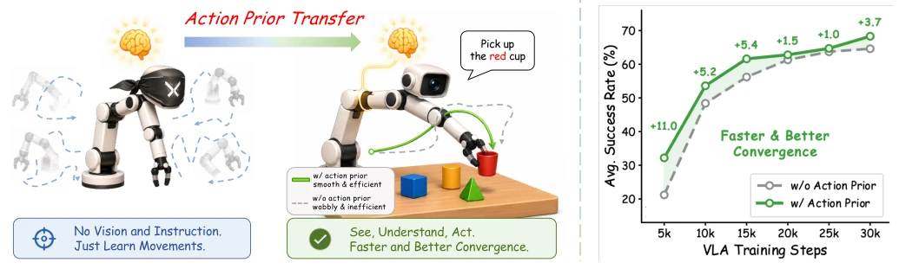
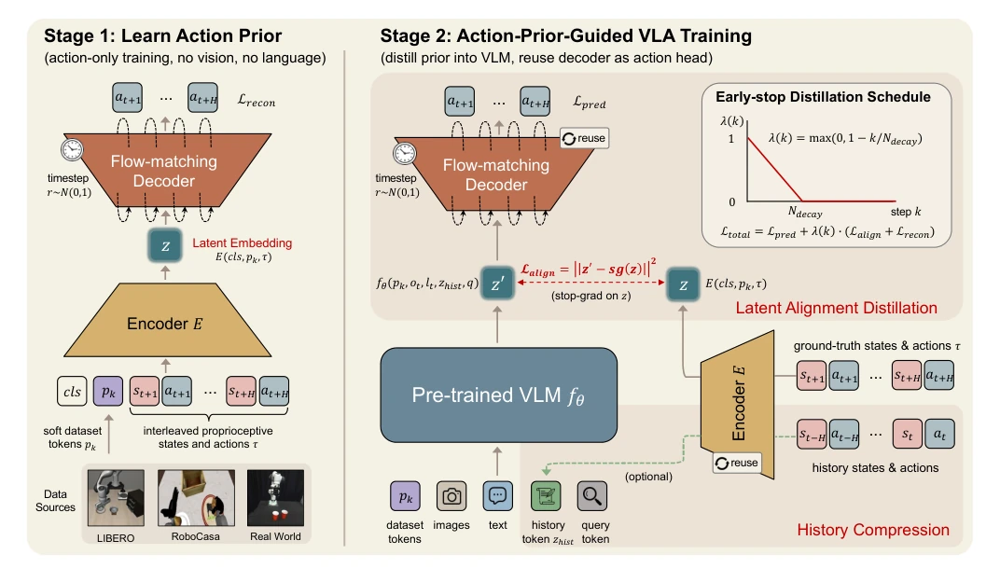
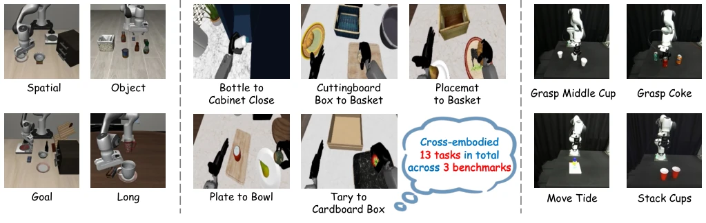
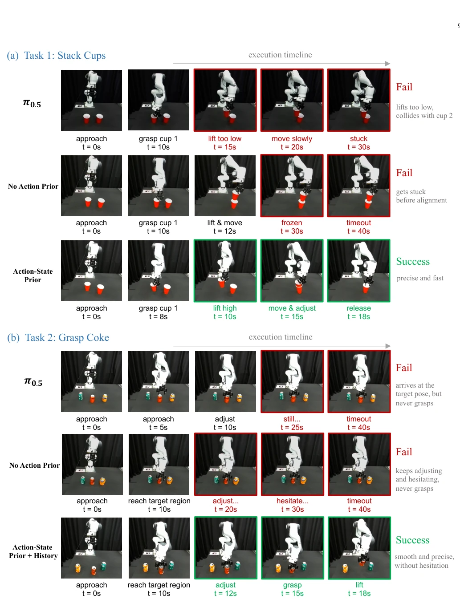
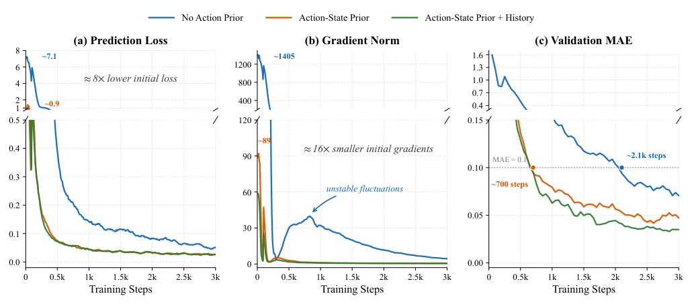
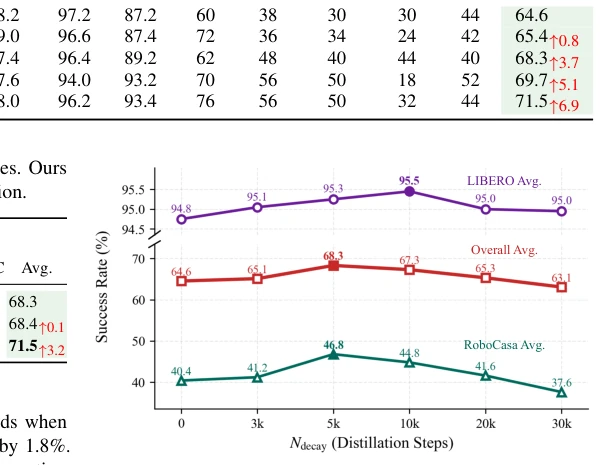
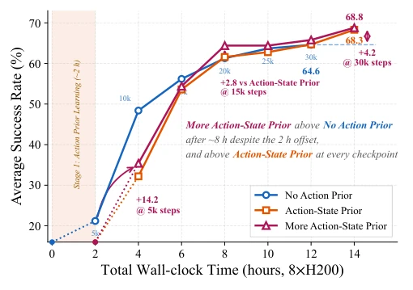

This paper equips VLA models with "muscle memory". Traditional VLA assigns VLMs to see and think, while the action head learns from scratch, resulting in a "smart brain, clumsy hands" outcome. The authors propose a two-stage training: first letting the action head practice actions blindly (without looking at images or listening to instructions), then having it cooperate with the VLM. Although it sounds like "practicing basics before learning moves", this approach is indeed effective when facing cross-robot embodiments and scarce real-world data. However, this method essentially relies on stacking priors through data, remains powerless for tasks without action data, and the two-stage training increases engineering complexity, potentially unsuitable for resource-constrained scenarios.
Existing VLA models (e.g., RT-2 [11], OpenVLA [12]) rely on VLM visual-language priors, but action modules are typically randomly initialized or transferred from irrelevant modalities, lacking physical motion priors. This causes the action head to fail to provide stable gradients in the early training stage, interfering with the VLM backbone [18], [19]. Especially under cross-embodiment settings, heterogeneous action spaces of different robots exacerbate distribution differences [20]. Existing methods like GR00T [16], although using diffusion models, still require end-to-end learning of action distributions, making it difficult to converge stably on long-tail real tasks, and prone to overfitting simulation data.

Fig. 1: Illustration of motivation: a policy should first learn to move, and then learn to see and act. (a) In Stage 1, the action module is trained purely on action trajectories, without any visual observation or language instruction, to efficiently acquire a general action prior. (b) In Stage 2, the prior is transferred to VLA training, enabling model to perceive scenes and follow instructions with an action module that already knows how to move. With the action prior, the policy produces smooth trajectories. Without it, the trajectories are unstable. (c) The action prior accelerates VLA training and improves performance.
It proposes a two-stage framework. Stage 1 trains the Encoder-Decoder using only state-action trajectories, employing Flow-matching to reconstruct actions; the Encoder compresses trajectories into latent variable z to capture temporal structure, while the Decoder learns the action distribution. Stage 2 conducts VLA training, reusing the Stage 1 Decoder as the action head, aligning the VLM-predicted z' to z via early-stage latent distillation (Latent Distillation), and gradually decaying constraints to avoid overly restricting VLM representations. Additionally, the Encoder also acts as a history compressor, compressing past trajectories into a single token injected into the VLM to enhance temporal context. During training, historical and non-historical condition losses are mixed to balance dependencies. Overall, it decouples motion prior learning and cross-modal alignment, reducing optimization difficulty, enabling VLA to start from a structured action module rather than random initialization.

Fig. 2: Architecture of our proposed framework. In Stage 1, interleaved state-action sequences and dataset-specific soft-prompt tokens are fed into the encoder to produce a latent action embedding z. The flow-matching decoder then reconstructs the original actions conditioned on z. In Stage 2, the VLM processes soft data tokens, visual observations, language instructions, and a learnable query token to predict z′. The predicted embedding z′ is aligned with the encoder’s z through a decaying distillation loss and passed to the Stage 1-initialized decoder for action generation. The same encoder compresses historical trajectories into a single token zhist, injecting temporal context into the VLM at negligible cost.
Evaluated on 13 cross-embodiment tasks across LIBERO, RoboCasa, and real Franka, covering 9 simulation and 4 real tasks. Baselines include GR00T [16], π0.5 [72], and a no-action-prior variant. The metric is success rate. Results show that after adding action priors, the average success rate on real-world tasks improved from 35% to 66.3%, and simulation tasks also significantly improved. Training dynamics show the initial prediction loss reduced by 8 times, with more stable gradients. Ablation studies prove that history compression further improved long-tail task performance, e.g., Stack Cups rose from 25% to 80%. Additionally, scaling up Stage 1 action data size directly improves downstream performance, verifying the scalability of the prior, and training convergence speed is significantly faster than the baseline.

Fig. 3: Overview of the 13 cross-embodiment tasks across LIBERO, RoboCasa GR1, and real-world Franka manipulation. The suite covers heterogeneous embodiments, action-state spaces, scenes, and task distributions.

Fig. 4: Qualitative comparison on two long-tail real-world tasks: (a) Stack Cups and (b) Grasp Coke. Rows show representative key frames for each method. Without an action prior, policies move unstably. π0.5 underfits the real-world tail despite strong simulation results. History compression reduces hesitation near the grasp pose.

Fig. 5: Training dynamics during the first 3,000 VLA training steps for three variants: No Action Prior, Action-State Prior, and Action-State Prior + History. From left to right: prediction loss, gradient norm, and MAE validation score. The y-axis of each plot is broken to simultaneously show the large initial gap and the fine-grained later behavior. With action prior learning, the initial prediction loss is reduced by nearly 8× (from ∼7.1 to ∼0.9), and the initial gradient norm is reduced by nearly 16× (from ∼1,400 to ∼90), leading to significantly faster and more stable convergence.
其他图片Other Figures

Fig. 6: Effect of the distillation horizon under a fixed 30k- step VLA budget. Overall and RoboCasa performance peak at Ndecay = 5,000, while LIBERO peaks at 10k but remains nearly saturated. Too-short distillation underuses the prior, whereas too-long distillation constrains VLM refinement.

Fig. 7: Average success rate versus total wall-clock training time on 8×H200 GPUs. The prior variants include the 2-hour Stage 1 cost as an offset for fair accounting. More Action-State Prior scales the Stage 1 action data while keeping the action- prior training configuration and cost unchanged. It consistently outperforms the standard Action-State Prior throughout VLA training and achieves the best final success rate. This shows that scaling action prior learning is meaningful: a broader action- only distribution transfers directly into faster and stronger downstream VLA training.